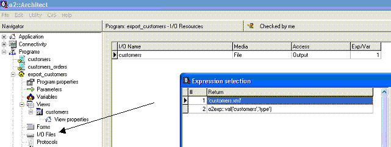
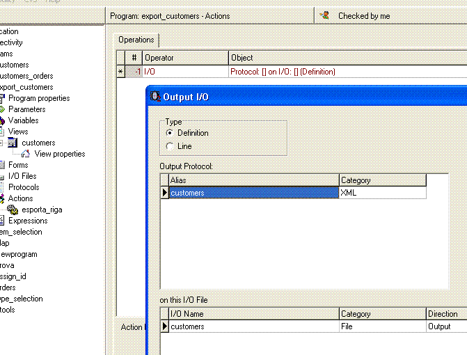
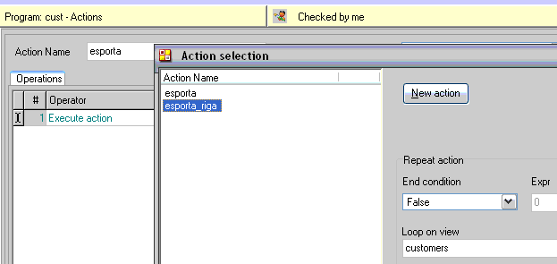

Questo capitolo pone le basi per la generazione di report in o2architect.
Infatti il primo step per una generazione di un report PDF in
o2architect consiste nella produzione di archivi di tipo XML.
Questi archivi verranno successivamente confezionati tramite l’istruzione
Print e inviati all’applicazione o2reporter (argomento trattato
successivamente).
Obiettivi
Al termine del capitolo il programmatore sarà in grado di:
Definire i file nel repository I/O
Definire i protocolli di trasmissione XML
Utilizzare l’operatore I/O per esportare il set di dati
Introduzione
Il linguaggio XML (eXtensible Markup Language)
è un linguaggio di markup aperto e basato su testo che fornisce informazioni di
tipo strutturale e semantico relative ai dati veri e propri. Questi "dati sui dati",
o metadati, offrono un contesto aggiuntivo all’applicazione che utilizza i dati e
consentono un nuovo livello di gestione e manipolazione delle informazioni basate
su web.
Attualmente è considerato lo strumento ideale per lo scambio di informazioni
fra sistemi informativi eterogenei. I dati memorizzati in un file XML
rispettano una struttura definita all’interno del file stesso e di semplice interpretazione.
In questo capitolo vedremo come esportare i dati disponibili in un programma o2
verso uno o più file XML.
Per produrre un file XML con o2architect è opportuno seguire 3
fasi:
Definire nell’area I/O del programma i file XML che saranno
generati, indicandone un alias e un’espressione che ne definisca il nome fisico di
memorizzazione
Definire i Protocols e per ogni protocol l’elenco dei campi che si
intende esportare sotto lo stesso nome di protocollo.
Utilizzare l’operatore I/O all’interno delle action al fine di esportare i
valori correnti del set di dati definito nel Protocol accodandoli al file
XML specificato come I/O
In questo capitolo vedremo come realizzare un programma che generi un file
XML contenente l’anagrafica dei clienti.
0.15.1Definizione di I/O
Dopo aver definito la view e i relativi campi necessari allo scopo passiamo
alla definizione della risorsa I/O.
Dal menu di navigazione all’interno del programma scegliere la voce I/O
Files per accedere all’elenco delle risorse input/output disponibili
per il programma.

Creare una nuova voce in elenco (F4)
Digitare il nome della risorsa (testo senza spazi o caratteri speciali)
Selezionare l’espressione che ne definisce il nome fisico (nel nostro caso
"customers.xml")
Il file sarà prodotto a partire dalla directory tmp dell’utente
corrente: [app_root]/users/[user_name]/tmp/
0.15.2Definizione del Protocol
Definire un protocollo significa raggruppare sotto lo stesso nome un elenco di
campi che intendiamo esportare.
Dal menu di navigazione accedere alla voce Protocols e premere ENTER. Si accede all’area Protocols del programma: nella parte
alta una griglia con i nomi dei protocolli; in basso, per ogni protocollo, l’elenco dei
campi con il relativo alias XML che saranno oggetto di esportazione.
La colonna Models permette di definire un modello di dato per l'esportazione
diverso dal modello definito per il campo; è necessario solo in caso di esportazione di un campo di tipo calculated, che come forse il lettore avrà notato è l’unica
variabile che non comporta una definizione di model.
0.15.3Utilizzo dell’operatore I/O
Dopo aver definito I/O files e Protocols l’accodamento dei
valori nel file XML viene eseguito da o2runtime quando incontra
un’istruzione di I/O definita all’interno di una action.
Definiamo una action ("esporta_riga") che esporterà i valori correnti del
protocollo e all’interno inseriamo un’istruzione di I/O.

L’istruzione di I/O presenta 3 opzioni:
Type: identifica il tipo di esportazione e può assumere due valori:
Definition: saranno accodati al file XML i dati di
definizione del protocollo, quindi nome dei campi e tipologia
Line: saranno accodati i valori dei campi del protocollo (in questo
caso la prima volta o2runtime esporta anche la definizione della struttura)
Output protocol: selezionare dall’elenco dei Protocols del
programma il protocollo che si intende esportare
I/O file: selezionare dall’elenco degli I/O files del programma
la risorsa di output su cui si intende accodare i dati
Adesso non rimane altro che invocare l’esecuzione della action "esporta_riga"
per ogni record della view "customers". Per fare questo è necessario creare un’altra
action (ad esempio "esporta") che richiami la action "esporta_riga" tramite
l’istruzione Execute action, utilizzando l’opzione Loop on View

In o2architect l’istruzione Execute action è l’unico metodo che il
programmatore ha per invocare l’esecuzione di un’azione in modo ciclico (loop).
Ricordarsi di inserire una expression = "false" come espressione di fine azione
(End action) in modo che l’azione "esporta_riga" venga ripetuta per tutti
i record della view "customers".
Mandare in esecuzione l’azione “esporta” utilizzando un qualsiasi evento
preposto e il file XML “customers.xml” sarà generato nella directory
temporanea dell’utente loggato.